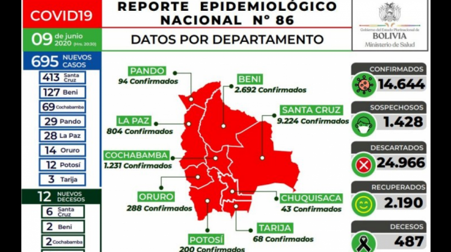
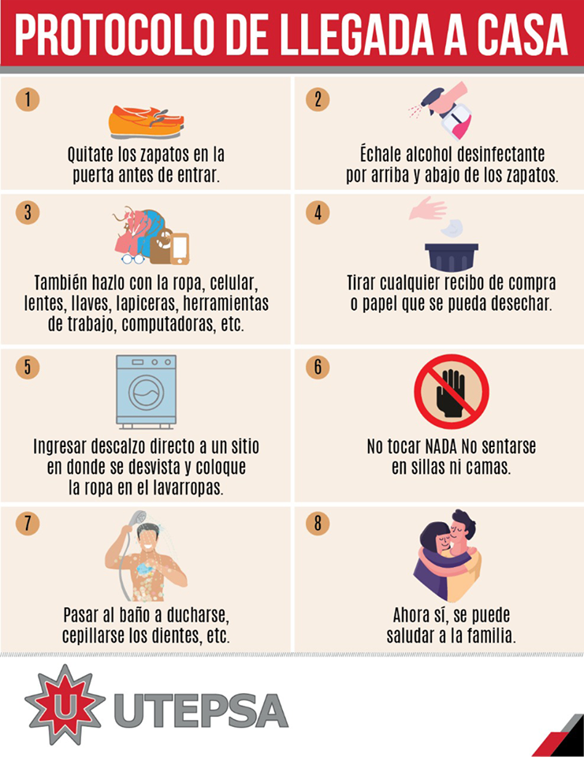

El COVID‑19 es la enfermedad infecciosa causada por el coronavirus que se ha descubierto más recientemente. Tanto este nuevo virus como la enfermedad que provoca eran desconocidos antes de que estallara el brote en Wuhan (China) en diciembre de 2019. Actualmente la COVID‑19 es una pandemia que afecta a muchos países de todo el mundo
Los coronavirus son una extensa familia de virus que pueden causar enfermedades tanto en animales como en humanos. En los humanos, se sabe que varios coronavirus causan infecciones respiratorias que pueden ir desde el resfriado común hasta enfermedades más graves como el síndrome respiratorio de Oriente Medio (MERS) y el síndrome respiratorio agudo severo (SRAS). El coronavirus que se ha descubierto más recientemente causa la enfermedad por coronavirus COVID-19.
SINTOMAS
Los síntomas más habituales son los siguientes:
-Fiebre
-Tos seca
-Cansancio
Otros síntomas menos comunes son los siguientes:
-Molestias y dolores
-Dolor de garganta
-Diarrea
-Conjuntivitis
-Dolor de cabeza
-Pérdida del sentido del olfato o del gusto
-Erupciones cutáneas o pérdida del color en los dedos de las manos o de los pies
Los síntomas graves son los siguientes:
-Dificultad para respirar o sensación de falta de aire
-Dolor o presión en el pecho
-Incapacidad para hablar o moverse
SINTOMAS
Covid-19 Bolivia

Los coronavirus (CoV) son una gran familia de virus que causan enfermedades que van desde el resfriado común hasta enfermedades más graves. La epidemia de COVID-19 fue declarada por la OMS una emergencia de salud pública de preocupación internacional el 30 de enero de 2020.
COVID-19: Bolivia reporta 1.016 nuevos contagios y 37 fallecidos
La Paz, 25 jun (UC/MS).- Bolivia reportó hoy 1.016 nuevos contagios de COVID-19 y el número total de infectados ascendió a 28.503, mientras que los decesos suman 913, luego de registrarse 37 fallecidos en las últimas horas.
De acuerdo con el último reporte del Ministerio de Salud, el departamento de Santa Cruz registró 571 contagios nuevos, La Paz 212, Tarija 62, Cochabamba 50, Chuquisaca 48, Beni 33, Oruro 22, Potosí 12 y Pando 6.
Con esos números, Santa Cruz acumuló a la fecha 16.555 infectados, Beni 3.920, Cochabamba 2.970, La Paz 2.373, Oruro 721, Potosí 588, Pando 513, Chuquisaca 470 y Tarija 393.
Los fallecidos eran residentes de Santa Cruz (8), Oruro (8), Cochabamba (6), Beni (3), Chuquisaca (3), La Paz (3), Pando (2), Potosí (2) y Tarija (2).
Entretanto el número acumulado de pruebas negativas llegó a 38.094 y se contabilizaron 2.987 casos sospechosos por el momento.
El Ministerio de Salud aclaró que del número total de infectados (28.503), solo 20.252 son casos activos, mientras que los pacientes recuperados suman 7.338 a la fecha.
Covid-19 Santa Cruz-Bolivia

Santa Cruz se mantiene como la región más golpeada por la pandemia. El departamento beniano nuevamente se ha disparado en contagios, mientras que tras la flexibilización de la cuarentena, Cochabamba y La Paz muestran una situación ascendente.
La situación es especialmente preocupante en la región de Santa Cruz, la mayor y más poblada de Bolivia, con algo más de tres millones de habitantes, que concentra la mayoría de casos, 13.539, y de fallecimientos, 319.
El reporte del Ministerio de Salud confirmó que en la jornada del viernes se registraron 18 decesos: seis en Santa Cruz, cuatro en Beni, tres en Chuquisaca, dos en Oruro, y uno en Potosí, La Paz y Cochabamba.
 El COVID‑19 es la enfermedad infecciosa causada por el coronavirus que se ha descubierto más recientemente. Tanto este nuevo virus como la enfermedad que provoca eran desconocidos antes de que estallara el brote en Wuhan (China) en diciembre de 2019. Actualmente la COVID‑19 es una pandemia que afecta a muchos países de todo el mundo
El COVID‑19 es la enfermedad infecciosa causada por el coronavirus que se ha descubierto más recientemente. Tanto este nuevo virus como la enfermedad que provoca eran desconocidos antes de que estallara el brote en Wuhan (China) en diciembre de 2019. Actualmente la COVID‑19 es una pandemia que afecta a muchos países de todo el mundo